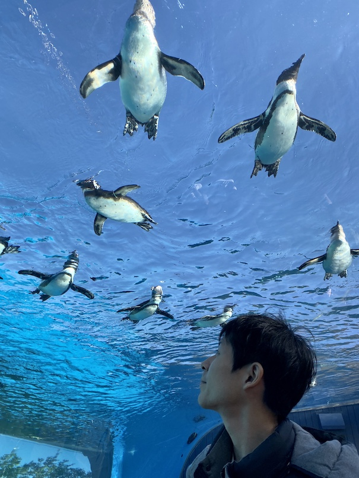

Yuta KUSAKABE / 日下部 佑太
Assistant Professor
Department of Mathematics,
Graduate School of Science,
Kyoto University,
Kyoto 606-8502, Japan
Curriculum Vitae
E-mail: kusakabe[at]math.kyoto-u.ac.jp, kusakape[at]gmail.com
Research interests: Several Complex Variables, Complex Geometry
Keywords: Oka principle, Oka manifold, Stein space, Gromov ellipticity
Photo: Penguins' Jôku-Ikô / 上空移行
(cf. Oka's Jôku-Ikô Principle [Oka, 1936])
Papers
-
On the fundamental groups of subelliptic varieties.
arXiv:2212.07085
-
Surjective morphisms onto subelliptic varieties.
arXiv:2212.06412
-
Oka properties of complements of holomorphically convex sets.
Ann. of Math. (2), to appear
arXiv:2005.08247
-
Thom's jet transversality theorem for regular maps.
J. Geom. Anal., 31(6):6031–6041, 2021
arXiv:2004.13539
-
An implicit function theorem for sprays and applications to Oka theory.
Internat. J. Math., 31(9):2050071, 9, 2020
arXiv:2004.12397
-
Elliptic characterization and unification of Oka maps.
Math. Z., 298(3–4):1735–1750, 2021
arXiv:2003.03757
-
Oka complements of countable sets and nonelliptic Oka manifolds.
Proc. Amer. Math. Soc., 148(3):1233–1238, 2020
arXiv:1907.12024
-
Elliptic characterization and localization of Oka manifolds.
Indiana Univ. Math. J., 70(3):1039–1054, 2021
arXiv:1808.06290
-
Dense holomorphic curves in spaces of holomorphic maps and applications to universal maps.
Internat. J. Math., 28(4):1750028, 15, 2017
arXiv:1702.08022
Notes
-
岡多様体と楕円性. (Japanese)
日本数学会2021年度年会講演アブストラクト, 2021
-
Characterizations of Oka manifolds by holomorphic flexibilities. (Japanese)
RIMS Kôkyûroku, 2175:101–107, 2021
-
岡の原理と楕円性. (Japanese)
第62回函数論シンポジウム講演アブストラクト, 2019
-
Survey of holomorphic homotopy theory. (Japanese)
代数学特論レポート, 2018
Talks
-
TBA.
Workshop on Dynamics in Arithmetic and Complex Geometry and its Applications, Osaka Metropolitan University, 16–19 January 2024
-
TBA.
Winter Seminar on Several Complex Variables 2023, University of Tsukuba, 15–17 December 2023
-
TBA.
Problems on Foliations and Dynamics in Complex Geometry, RIMS, Kyoto University, 20–22 November 2023
-
TBA.
Complex Analysis Seminar, University of Ljubljana, 10 October 2023
-
Gromov ellipticity in complex analytic geometry and algebraic geometry.
Young Mathematicians Workshop on Several Complex Variables 2023, Pusan National University, 9–12 August 2023
-
Surjective morphisms onto Gromov elliptic varieties.
Oka Theory and Complex Geometry Conference, Summer 2023, Sophus Lie Conference Center, Nordfjordeid, 19–23 June 2023
-
Gromov ellipticity in complex analytic geometry and algebraic geometry.
Complex Analysis, Geometry, and Dynamics - Portorož 2023, Hotel Histrion, Portorož, 5–9 June 2023
-
Surjective morphisms onto subelliptic varieties.
Workshop on Complex Geometry in Osaka 2023, Osaka University, 22–24 March 2023
-
複素解析幾何と代数幾何における楕円性について.
OCAMI Complex Analysis Seminar, Osaka Metropolitan University, 21 February 2023
-
Oka theory for algebraic manifolds. (online)
Algebraic Geometry Seminar, Osaka University, 6 June 2022
-
岡多様体と双対Levi問題.
Colloquium, Kyoto University, 27 April 2022
-
岡多様体と楕円性. (online)
The 17th Kagoshima Algebra-Analysis-Geometry Seminar, 16–18 February 2022
-
Oka manifolds and ellipticity. (online)
The 7th KTGU Mathematics Workshop for Young Researchers, Kyoto University, 14–15 February 2022
-
Elliptic characterization and unification of Oka maps. (online)
Workshop on Geometry of Foliations and its Applications, 10–12 December 2021
-
Oka theory for algebraic manifolds. (online)
Tokyo-Kyoto Algebraic Geometry Seminar, 30 November 2021
-
Oka theory for algebraic manifolds. (online)
Miyako-no-Seihoku Algebraic Geometry Symposium 2021, Waseda University, 17–20 August 2021
-
Oka manifolds and the dual Levi problem. (online)
HAYAMA Symposium on Complex Analysis in Several Variables XXII, 22–25 July 2021
-
複素解析学における剛性と柔軟性. (online)
Galois Festival 2021,
Kyoto University, 15 June 2021
-
Oka manifolds and the dual Levi problem. (online)
Differential Topology Seminar,
Kyoto University, 25 May 2021
-
岡多様体と楕円性. (online)
MSJ Spring Meeting 2021,
Keio University, 15–18 March 2021
-
The Oka principle and the dual Levi problem. (online)
Grauert Theory and Recent Complex Geometry,
Osaka City University, 6–9 February 2021
-
岡多様体と楕円性. (online)
Young Mathematicians Online Workshop on Several Complex Variables,
Osaka City University, 25 November–16 December 2020
-
多項式凸集合の補空間の岡性.
Geometry Seminar,
Osaka University, 9 November 2020
-
多項式凸集合の補空間の岡性. (online)
MSJ Autumn Meeting 2020,
Kumamoto University, 22–25 September 2020
-
Oka properties of complements of holomorphically convex sets. (online)
Seminar on Geometric Complex Analysis,
The University of Tokyo, 29 June 2020
-
Elliptic characterization of the Oka principle. (online)
Virtual Conference on Complex Analysis and Complex Geometry,
Western University's online system OWL, 4 May–14 June 2020
-
Oka complements of countable sets and non-elliptic Oka manifolds.
Winter Seminar on Several Complex Variables 2019,
Tohoku University, 21–23 December 2019
-
柏原の定理と $\partial\bar\partial$-lemma.
Kodaira's Theory on Complex Manifolds and its Development,
Osaka City University, 8–9 December 2019
-
Dense entire curves and Oka manifolds.
Rational Points on Higher Dimensional Varieties,
RIMS, Kyoto University, 2–6 December 2019
-
岡の原理と楕円性.
62nd Symposium on Function Theory,
Daido University, 2–4 November 2019
-
Elliptic characterization and localization of Oka manifolds.
Tohoku Complex Analysis Seminar,
Tohoku University, 2 October 2019
-
岡多様体と楕円性.
54th Summer Seminar on Function Theory,
Izu Nagaoka Onsen Otori-so, Shizuoka, 28–30 August 2019
-
Oka principle and relative ellipticity.
Workshop on Holomorphic Maps, Pluripotentials and Complex Geometry,
Shizuoka Prefecture Gender Equality Center "Azalea", Shizuoka, 26–29 March 2019
-
岡の原理と楕円性 (1 & 2).
Contact Structures, Singularities, Differential Equations and Related Topics,
Shizuoka Prefecture Gender Equality Center "Azalea", Shizuoka, 28–31 January 2019
-
Elliptic characterization and localization of Oka manifolds.
The 24th Symposium on Complex Geometry,
Shiinoki Cultural Complex, Ishikawa, 13–16 November 2018
-
Elliptic characterization and localization of Oka manifolds.
Stein Manifolds and Holomorphic Mappings 2018,
University of Ljubljana, 17–21 September 2018
-
Elliptic characterization and localization of Oka manifolds.
53rd Summer Seminar on Function Theory,
Active Resorts FUKUOKA YAHATA, Fukuoka, 24–26 August 2018
-
Holomorphic flexibility properties of mapping spaces.
HAYAMA Symposium on Complex Analysis in Several Variables XX & Pacific Rim Complex-Symplectic Geometry Conference,
Shonan Village Center, Kanagawa, 13–17 July 2018
-
Holomorphic maps with dense images.
Winter Seminar on Several Complex Variables 2017,
Tokyo University of Science, 22–24 December 2017
-
Dense holomorphic curves in spaces of holomorphic maps.
Young Mathematicians Workshop on Several Complex Variables and Complex Geometry 2017,
Capital Normal University, 9–11 December 2017
-
Characterizations of Oka manifolds by entire curves.
Topology of Pseudoconvex Domains and Analysis of Reproducing Kernels,
RIMS, Kyoto University, 20–22 November 2017
-
Dense holomorphic curves and universal holomorphic maps.
52nd Summer Seminar on Function Theory,
Kanpo no Yado Yanagawa, Fukuoka, 6–8 September 2017
-
Dense holomorphic curves in spaces of holomorphic maps.
Seminar on Analytic Geometry,
Nagoya University, 1 May 2017
-
Dense holomorphic curves in spaces of holomorphic maps.
Seminar on Geometric Complex Analysis,
The University of Tokyo, 17 April 2017
-
Dense holomorphic curves in spaces of holomorphic maps.
Geometry Seminar,
Osaka University, 10 April 2017
-
Dense holomorphic curves in spaces of holomorphic maps.
Komaba Seminar on Complex Geometry,
The University of Tokyo, 6–8 March 2017
-
Holomorphic flexibility properties of configuration spaces, symmetric products and Douady spaces.
51st Summer Seminar on Function Theory,
Hotel Sekifu, Yamanashi, 2–4 September 2016
Curriculum Vitae
Yuta Kusakabe
Born on May 22, 1993 in Aichi, Japan.
Education
- September 2020
- Doctor of Philosophy (Science)
- Graduate School of Science, Osaka University
- Advisor: Katsutoshi Yamanoi
- March 2018
- Master of Science
- Graduate School of Science, Osaka University
- Advisor: Katsutoshi Yamanoi
- March 2016
- Bachelor of Science
- School of Science, Nagoya University
- Advisor: Takeo Ohsawa
Employment / Fellowships
- December 2020–
- Assistant Professor
- Department of Mathematics, Graduate School of Science, Kyoto University
- October 2020–November 2020
- JSPS Research Fellow (PD)
- Japan Society for the Promotion of Science
- April 2018–September 2020
- JSPS Research Fellow (DC1)
- Japan Society for the Promotion of Science
- April 2017–March 2018
- Research Assistant
- Graduate School of Science, Osaka University
Membership
- April 2020–
- The Mathematical Society of Japan
Grants
- August 2021–March 2024
- Grant-in-Aid for Research Activity Start-up (Grant Number: 21K20324)
- Japan Society for the Promotion of Science
- April 2018–March 2021
- Grant-in-Aid for JSPS Fellows (Grant Number: 18J20418)
- Japan Society for the Promotion of Science
Awards
- September 2020
- MSJ Takebe Katahiro Prize for Encouragement of Young Researchers
- The Mathematical Society of Japan
Organization
- October 2021–
- Algebraic Geometry Seminar
- Kyoto University
- with Yuji Odaka, Tatsuro Kawakami and Teppei Takamatsu
Teaching
Lectures at Kyoto University:
- April 2023–September 2023
- Function Theory of a Complex Variable
- Faculty of Science
- April 2023–September 2023
- Exercises in Analysis I
- Faculty of Science
- April 2023–September 2023
- Calculus with Exercises A (T18)
- Liberal Arts and General Education Courses
- April 2023–September 2023
- Calculus with Exercises A (T21)
- Liberal Arts and General Education Courses
- April 2022–September 2022
- Function Theory of a Complex Variable
- Faculty of Science
- April 2022–September 2022
- Exercises in Analysis I
- Faculty of Science
- April 2022–September 2022
- Calculus with Exercises A (T1)
- Liberal Arts and General Education Courses
- April 2022–September 2022
- Calculus with Exercises A (T3)
- Liberal Arts and General Education Courses
- October 2021–March 2022
- Calculus with Exercises B (A1/A2)
- Liberal Arts and General Education Courses
- April 2021–September 2021
- Exercises in Analysis I
- Faculty of Science
- April 2021–September 2021
- Calculus with Exercises A (T1)
- Liberal Arts and General Education Courses
- April 2021–September 2021
- Calculus with Exercises A (T3)
- Liberal Arts and General Education Courses
Teaching Assistant at Graduate School of Science, Osaka University:
- April 2020–September 2020
- Advanced Complex Analysis (Exercise Session)
- Lecturer: Shinpei Baba
- October 2019–March 2020
- Geometry 2 (Exercise Session)
- Lecturer: Yasuhiro Hara
- October 2019–March 2020
- Geometry 1 (Exercise Session)
- Lecturer: Yoshihiko Matsumoto
- April 2019–September 2019
- Advanced Complex Analysis (Exercise Session)
- Lecturer: Katsutoshi Yamanoi
- April 2019–September 2019
-
- Advanced Calculus (Exercise Session)
- Lecturer: Takahisa Inui
- October 2018–March 2019
- Complex Analysis (Exercise Session)
- Lecturer: Hideaki Sunagawa
- April 2018–September 2018
- Point-Set Topology and Multivariable Calculus (Exercise Session)
- Lecturer: Kazuki Tokimoto
Teaching Assistant at Center for Education in Liberal Arts and Sciences, Osaka University:
- October 2017–March 2018
- Calculus B (Problem Session)
- Lecturer: Naotake Takao
- April 2017–September 2017
- Calculus A (Problem Session)
- Lecturer: Naotake Takao
$\square$